One platform for placement preparation
Learn. Practice.
Prove you are ready.
Build skills with guided learning, solve real coding problems, take secure assessments, practise interviews, and see exactly where to improve.
For colleges and placement teams — Contact us
- 01 Continue where you left off Your last problem and lesson, one click away.
- 02 Today’s missions A short daily plan, completed through real activity.
- 03 Prep Score & rank Your standing, visible only to you.
- 4,000+
- Coding practice questions
- 20+
- Features across the placement journey
- Also inside
- AI mock interviews Spoken questions, answered out loud Anvi AI A hint when you’re stuck, not the answer
Built for college students, faculty, coordinators, and placement teams.
Who we are
Placement prep is scattered.
Notes in one app, problems in another, tests elsewhere.
Every switch between tools costs you progress.
PeerPrep brings it into one place.
-
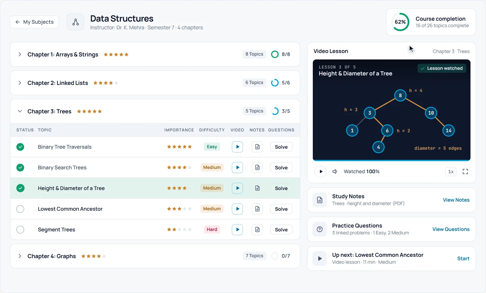
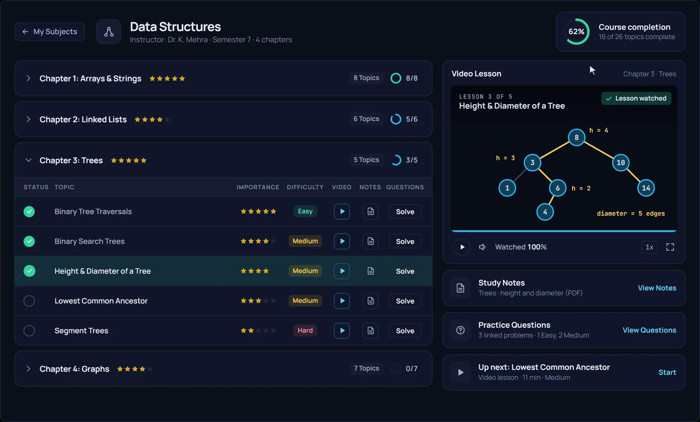
-
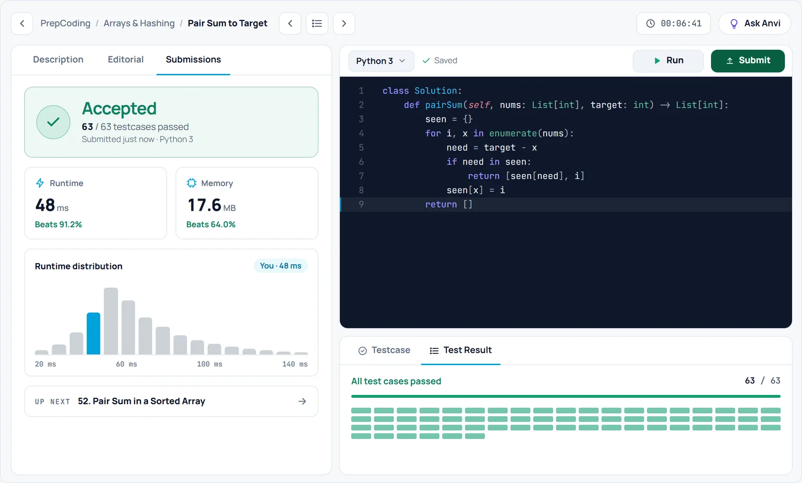
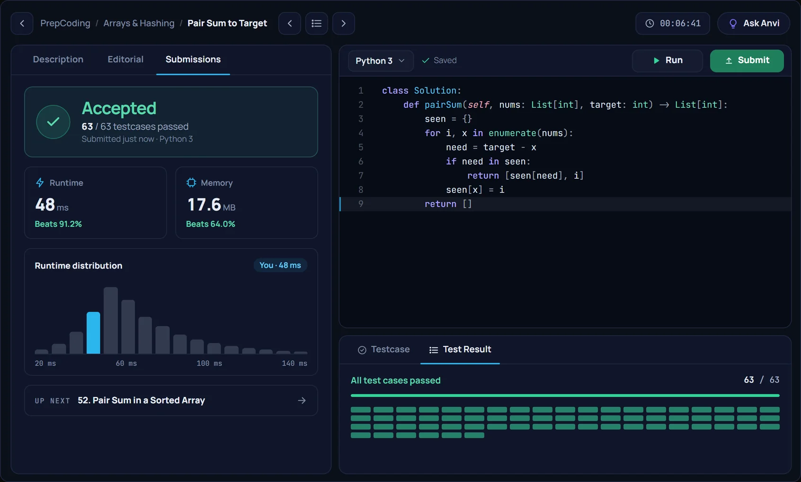
-
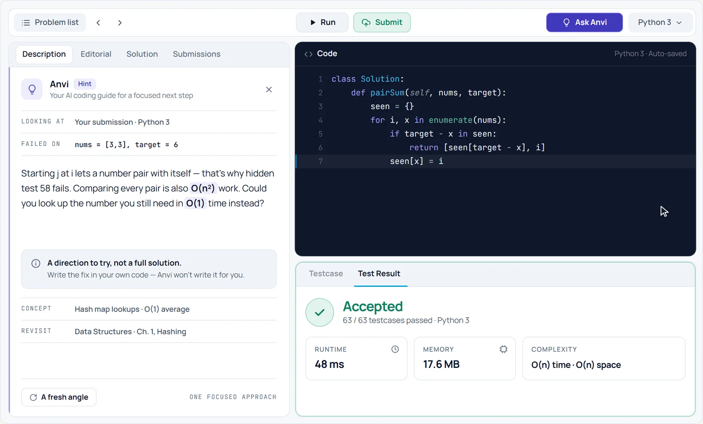
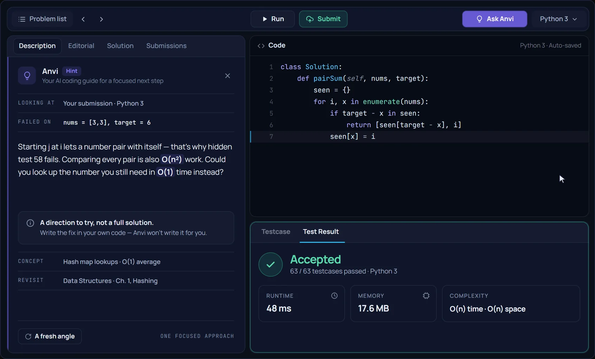
-
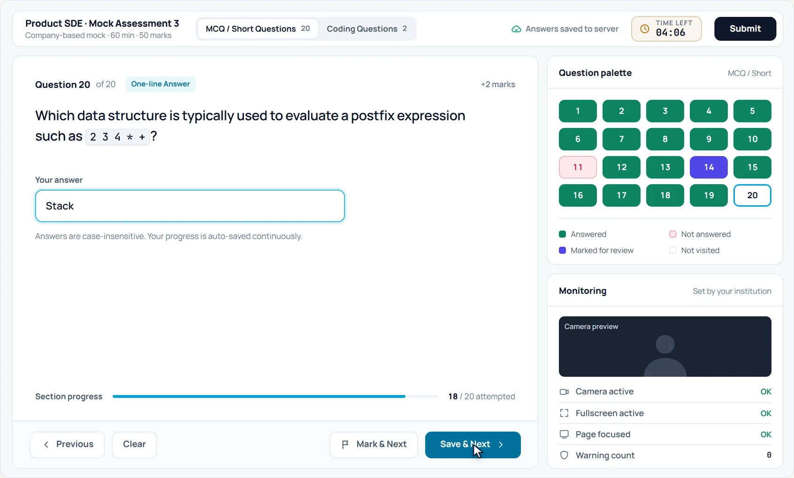
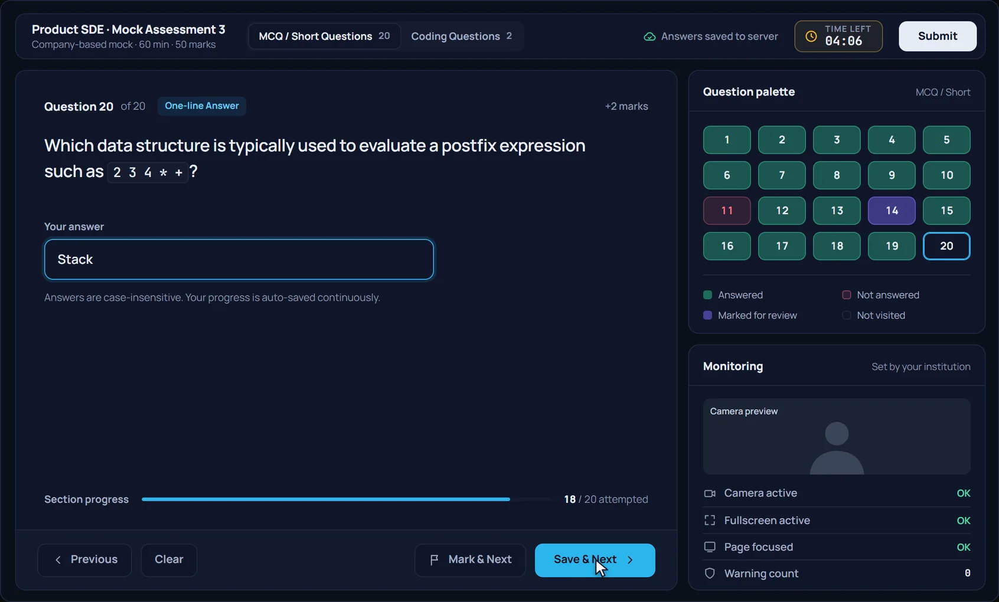
-
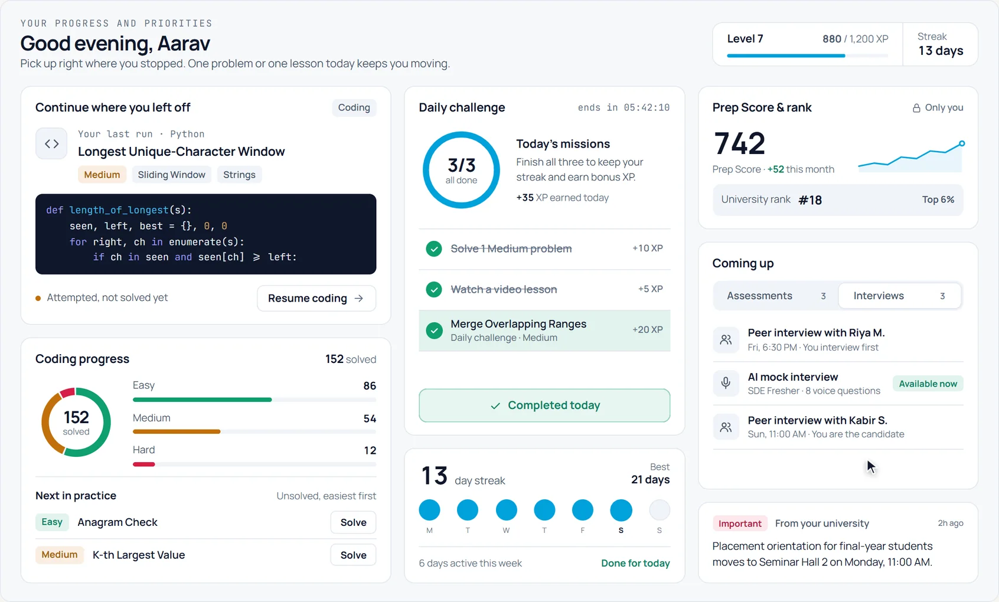
-
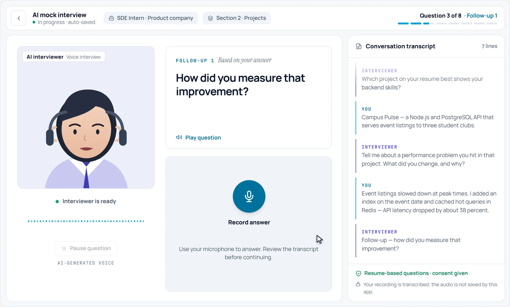
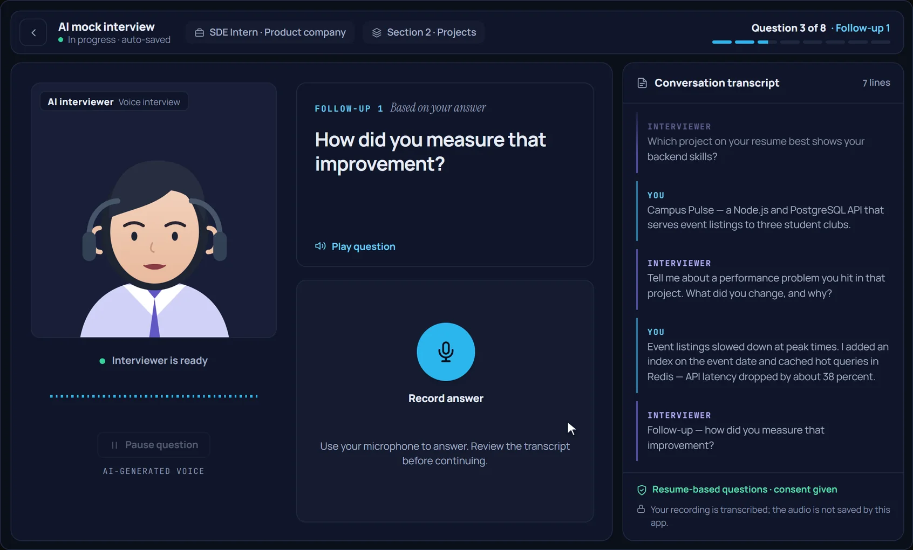
-
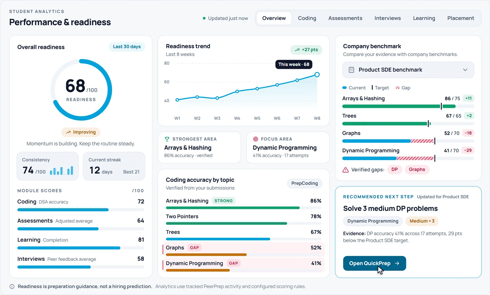
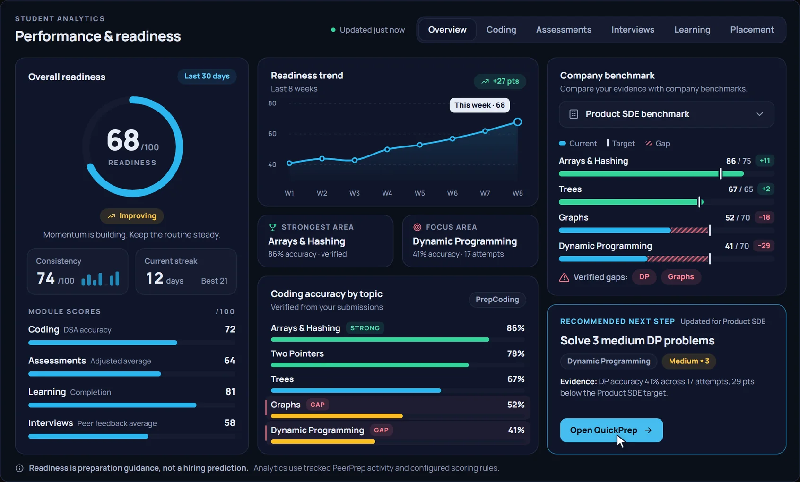
-
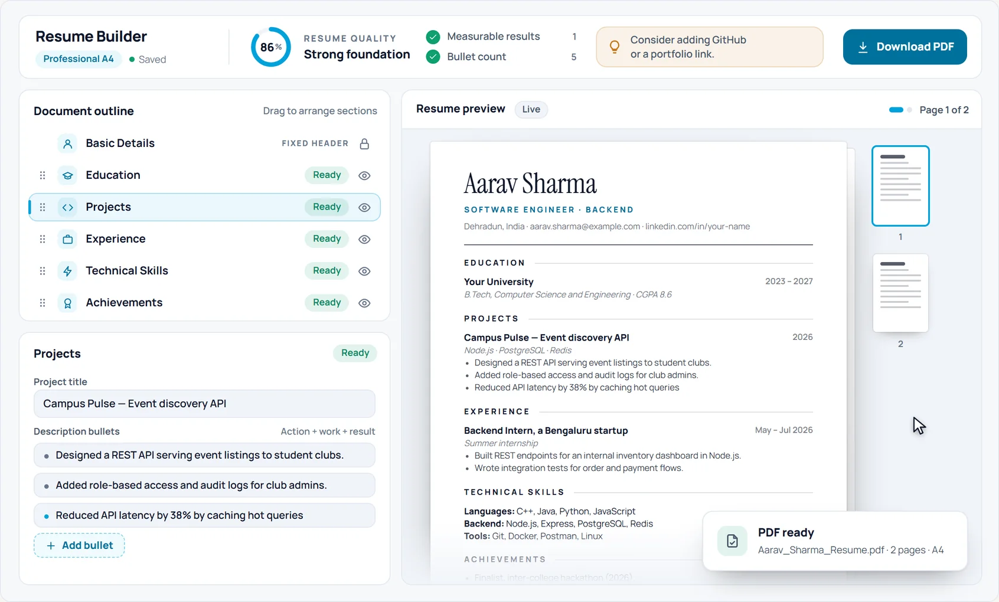
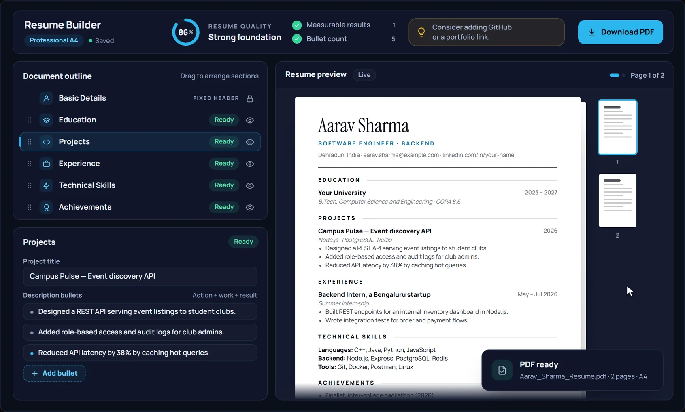
-
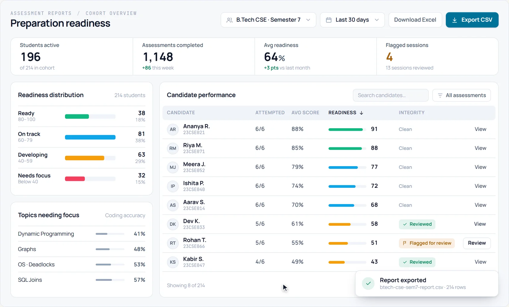
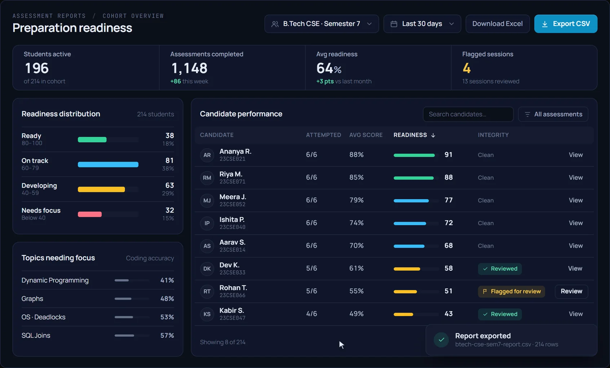
One platform for every step of placement preparation.
See it live
Watch the platform work
Seven walkthroughs of the student interface, from a first lesson to a finished resume.
01 Guided learning
Follow your semester topic by topic: lessons, notes and progress in one place.
- Semester, subject, chapter and topic structure
- Video lessons, notes and question sheets
- Topic completion and video progress tracked
02 PrepCoding
Find the right problem, write code in the browser, run the samples, then submit.
- Filter by topic, company and difficulty
- Sample and custom test cases before you submit
- Verdict with passed tests, runtime and memory
03 Anvi AI
Stuck on a problem? Ask Anvi for a direction to try, then write the fix yourself.
- Built into every coding problem
- A hint or approach, not a full solution
- Back to your editor with a clear next step
04 Assessments
Timed tests with coding and objective questions, in a focused and secure test window.
- MCQ, short-answer and coding sections
- Question palette, mark for review and autosave
- Server-enforced timer with institution-set monitoring
05 AI mock interview
Answer spoken questions out loud, handle the follow-up, then review your transcript.
- Questions delivered by voice, with role context
- Follow-up questions based on your answer
- A transcript to review; re-record before you confirm
06 Analytics
See your strongest area, your biggest gap and the next best step to take.
- Readiness trend, consistency and streak
- Coding accuracy by topic
- Company benchmarks as guidance, not a prediction
07 Resume builder
Turn your work into a professional resume with a live A4 preview and quality guidance.
- Starts from your saved profile
- Reorder or hide sections; measurable-result checks
- Download a clean PDF
How it works
A preparation loop that keeps getting smarter
Five connected stages, one platform. Progress is based on what you actually do inside it.
-
Step 1: Learn
Semester-wise subjects, video lessons, notes and question sheets your institution opens for you.
- Guided Learning
- Notes & PDFs
- Topic progress
-
Step 2: Practice
Topic-wise and company-wise coding problems. Stuck? Ask Anvi for a direction, not the answer.
- PrepCoding
- QuickPrep
- Anvi AI
-
Step 3: Assess
Timed tests and real coding evaluations in a secure, monitored test experience.
- Mock assessments
- College assessments
- Reports
-
Step 4: Interview
Mock interviews with peers, and spoken practice with an AI voice interviewer.
- Peer interviews
- AI mock interviews
- Peer feedback
-
Step 5: Improve
Analytics turn your activity into topic gaps, benchmarks and a recommended next step.
- Analytics
- Prep Score
- Benchmarks
…then the loop starts again — with better evidence.
Plan your preparation
Pick a target. See your path.
One placement goal, four connected steps — each one a real PeerPrep screen.
-
01Learn
Guided Learning modules
-
02Practice
PrepCoding by topic
-
03Prove
Company-based mock assessment
-
04Improve
Company benchmark gaps
- Focus areas
- Arrays · Graphs · DP
- Assessment format
- Coding + MCQ, timed
- Interview practice
- AI + peer mocks
Illustrative example. Actual tracks, assessments and benchmarks are configured by your institution. Readiness is guidance, not a hiring prediction.
Features
20+ features. One placement journey.
What PeerPrep includes for students, grouped by the stage of preparation each part serves—from the first lesson to the final interview round.
Learn
Semester-wise, faculty-curated.
- Guided semester learning
- Subjects broken into chapters and topics, following paths curated by your faculty.
- Video lessons & notes
- Embedded lessons, notes and PDFs, with video progress saved where you left off.
- Topic question sheets
- Practice links for every topic, marked with importance and difficulty.
- Completion tracking
- Topic, chapter and course completion, so the next thing to learn is always clear.
Practice
Real problems, real verdicts.
- Problem library
- Filter every question by topic, company or difficulty, or search by title and number.
- Coding workspace
- Run against sample and custom tests, then Submit for a verdict with passed tests, runtime and memory.
- Anvi AI
- Ask Anvi for a direction to try when you’re stuck—a nudge, not the full solution.
- QuickPrep tracks
- Curated company-focused, topic-focused and intensive question sets, with progress.
Assess
Test conditions, before the test.
- Company-based mock assessments
- Mock tests modelled on company-style rounds, to practise before the real one.
- College assessments
- Scheduled tests published by your institution, with reminders before they open.
- Timed, mixed-format tests
- MCQ, one-line, short-answer and coding sections, with integrity monitoring where enabled.
- Results & question review
- Score, rank and section-wise performance, with question review once results are released.
Interview
Practise the conversation.
- Peer mock interviews
- Paired as interviewer and interviewee—agree on a time slot, then practise live.
- Structured feedback
- Competency ratings, strengths and improvements, with a history of score trends.
- AI voice mock interviews
- Spoken questions with role and company context, answered through your microphone.
- Follow-ups & transcript
- Follow-up questions on what you said, and a transcript of each answer. Resume questions only with consent.
Insights
Know your next move.
- Readiness analytics
- Readiness, trend and a recommended next action—preparation guidance, not a prediction.
- Topic accuracy
- Coding accuracy by topic, with verified strong and weak areas.
- Company benchmarks
- Compare your evidence against a company benchmark and see the verified gaps.
- Prep Score & private rankings
- Your university and global position, visible only to you—no public leaderboard.
Career
Make progress visible.
- Resume builder
- Start from your saved profile, write against a live A4 preview, and download a professional PDF.
- Resume quality checks
- A quality percentage, measurable-result checks and suggestions for what to improve.
- Challenges, XP & badges
- Daily missions, levels and badges earned from verified activity.
- Profile & activity heatmap
- Easy, Medium and Hard progress, streaks and a year of activity at a glance.
- Notifications & reminders
- Assessment reminders, interview schedule updates and announcements.
- Prep Coins
- Institution-issued credits for selected features. They never affect Prep Score or rank.
Feature availability and content may vary by institution and account access.
Tools for faculty and placement teamsFor universities
Give every student a structured path—and every team a clearer view of progress
PeerPrep helps institutions organise preparation, deliver content and assessments, run interview programmes, and understand student readiness from one role-based workspace.
One clear path from preparation to confidence
- Know what to learn next
- Practise relevant coding questions
- Experience real test conditions
- Improve interview communication
- Understand strengths and gaps
- Build a professional resume
Guide preparation without piecing together multiple tools
- Publish learning resources and practice sets
- Schedule assessments and interview programmes
- Review progress and feedback
- Communicate through announcements
See preparation across the whole student journey
- Standardise learning and evaluation
- Manage cohorts
- Monitor readiness and participation
- Compare evidence with company benchmarks
- Export reports
Module availability is configured per institution.
Coordinator reports
The institution workspace
-
Student & cohort management
Bulk or CSV onboarding, academic master data, and full-access or assessment-only access.
-
Student progression
Semester promotion and progression controls that keep every cohort at the right stage.
-
Coordinator roles & permissions
Granular feature permissions, scoped to a coordinator’s own students or the whole institution.
-
Learning content management
Semesters, subjects, chapters and topics with videos, notes and practice links—updated in real time.
-
Assessment creation & delivery
Company-based mock and college assessments, from draft to publish, with scheduling, attempt limits, monitoring and result release.
-
Question & coding library
A reusable bank with CSV import, tags and difficulty, and coding problems with hidden test cases.
-
Reports & analytics
University, cohort and student views, flagged-session review, and CSV or Excel export.
-
Company benchmarks
Compare preparation evidence with company benchmarks to see where a cohort needs focus.
-
Peer interview programmes
Create interview events, pair students as interviewer and interviewee, and collect structured feedback.
-
AI interview authoring
Sections, topics, manual and AI-planned questions, follow-up limits, and consent-based resume questions.
-
QuickPrep authoring
Curated question sets built around a company, a topic, or a preparation goal.
-
Announcements & communication
Publish updates to students and cohorts from the same workspace that runs their preparation.
FAQ
Questions, answered
How PeerPrep works for students and institutions — access, practice, assessments, interviews and progress.
Can’t find an answer?
Contact usAn end-to-end placement preparation platform for guided learning, coding practice, assessments, mock interviews, performance analytics, challenges and career preparation — connected in one placement journey instead of spread across separate tools.
College students preparing for internships and placements, and the faculty, coordinators and placement teams who guide them.
Usually through their institution. Institutions control which modules are available, so what you see can vary according to your institution’s PeerPrep setup and your account access.
Yes. PrepCoding has 4,000+ questions with topic-, company- and difficulty-based discovery, a coding workspace with sample and custom test cases, submission history, editorials where available, and Anvi for a hint when you are stuck.
Anvi is the AI helper inside every coding problem. Press Ask Anvi for a direction to try when you are stuck — it nudges your thinking instead of handing over a full solution.
MCQ, one-line, short-answer, coding or mixed sections, with schedules, timers, secure setup, monitoring controls and result reports — including company-based mock assessments and college assessments.
Institutions can enable browser, camera, audio-event and AI-assisted monitoring. These support review and integrity policies, but no browser-based system can prevent every possible violation.
Students are paired as interviewer and interviewee, agree on a time, complete the mock interview, and submit structured feedback with competency ratings, strengths and improvements.
The AI interviewer asks structured questions out loud and you answer through your microphone. Your spoken answer is transcribed so you can review it, re-record if needed, and continue; follow-up questions build on what you said. Resume-based questions are used only when that interview requires them and you explicitly consent.
No. Prep Score is a verified progress signal, and a signed-in student sees only their own university and global position. There is no public leaderboard and no student lookup.
No. Readiness and company benchmarks are preparation guidance — they show where to focus next. They are not a prediction or guarantee of selection.
Yes. Start from your saved profile, then use flexible sections, a live A4 preview, quality guidance, reordering and visibility controls, and download a professional PDF.
One placement journey
Bring the complete placement journey into one platform
Whether you are preparing for your next coding round or guiding an entire student cohort, PeerPrep connects the work with the insight needed to improve it.
Explore all features